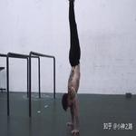
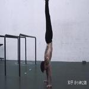

-
科就读于山东科技大学，地理信息科学专业。学校的学风建设良好，但相比较与学习，我偏爱于学校的美景，置身于校园中，仿佛游玩在公园中。四个季节没有一个季节会让你失望。
-
于我来说，没有固定的爱好。大多是浅尝辄止，都在半路中。上了大学后，自觉太瘦与太胖都不好，接触了街健，目前还处在街健菜鸡阶段，还是要继续努力的。


 
 -
人就读的是地信专业，读到此专业也是偶然。上大学之前从未接触过计算机方面的东西，目前学校的专业课讲解的是地理方面的知识，提升我们的学科素养，自己也自学了前端，也希望能向前端发展。
CSS是一门易懂难通的语言，如果好好运用，可以省去很多js代码H5的新特性值得我们去学习VUE作为一个渐进式框架，给开发者带来了优美的语法糖，方便快捷的入手。JS是前端的灵魂，避免成为一个API搬运者，原生JS的探索，会让你的技术更上一层楼。 -
的性格，不管由自己说还是别人说，都是很片面的东西。本人对于不熟的人的时候，话语比较少，对于合得来的人，会敞开心扉，且不善于主动交友。但是想要了解一个人，单凭文字是无法窥见全貌的，人与人之间的接触才是最好的粘合剂。
-
1429030586swc1786082507217860825072小波爱银河

请输入您的成绩(0~100)：
请输入您的邮箱：
*
退出